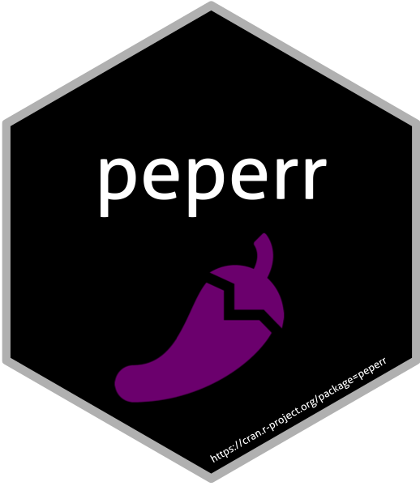

Changelog
Source:NEWS.md
peperr 1.2
CRAN release: 2021-02-27
- Suggestion of package CoxBoost and corresponding functions removed, as this package was archived.
peperr 1.1-7
CRAN release: 2013-04-08
- Suggestion of package randomSurvivalForest resolved, as this package was archived.
peperr 1.1-6
CRAN release: 2011-03-16
- bug concerning weighting in censored competing risks situation in function pmpec() fixed
peperr 1.1-5
CRAN release: 2010-01-22
- Bug in function pmpec() fixed (error message for argument type=“NoInf”)
peperr 1.1-4
CRAN release: 2009-09-28
- New peperr() arguments ‘sr’, ‘sr.name’ and ‘sr.restore’ to allow for restoring previously saved results
- Incorporation of interface to package randomSurvivalForest: Functions fit.rsf_mtry, complexity.ipec.rsf_mtry allow for selection of number of candidate values at each node by IPEC
peperr 1.1-3
CRAN release: 2009-04-23
- New function ipec(), to caclulate the integrated prediction error curve for survival data
peperr 1.1-2
CRAN release: 2009-01-22
- Default value of peperr argument RNG changed to ‘RNGstream’
- New peperr() argument lb, to choose if computation on slaves should be executed load balanced
peperr 1.1-1
CRAN release: 2008-12-18
- Independent parallel random number streams integrated -> new peperr() argument RNG
- peperr_1.1.tar.gz contained peperr_1.0-3.tar.gz by mistake
- plot.peperr() now works for non-integer complexity values as well
peperr 1.1
CRAN release: 2008-10-28
- New arguments of function peperr() are ‘clustertype’, to specify the type of cluster to be used (‘SOCK’ for socket, ‘MPI’, ‘PVM’ or ‘NWS’) and ‘clusterhosts’, that specifies the host list for socket clusters, if ‘clustertype=SOCK’ or ‘clustertype=NWS’.
- Function extract.fun() returns additional list element ‘variables’, containing global variables required for computation on cluster nodes.
- Default of argument ‘parallel’ in function peperr() changed from ‘FALSE’ to ‘NULL’. This fixed bug that switching from parallel to sequential execution was not possible, but is not affecting any other cases.
peperr 1.0-3
CRAN release: 2008-09-02
- New argument ‘seed’ in function peperr(), to allow reproducibility in parallel execution